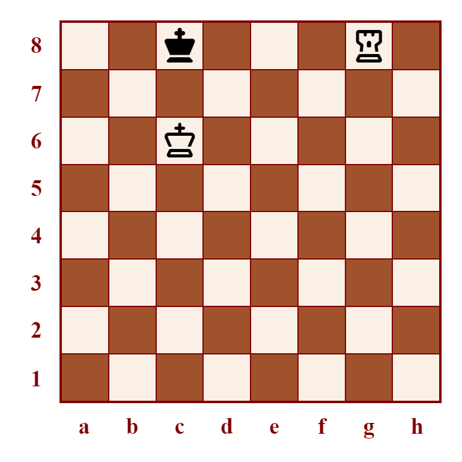
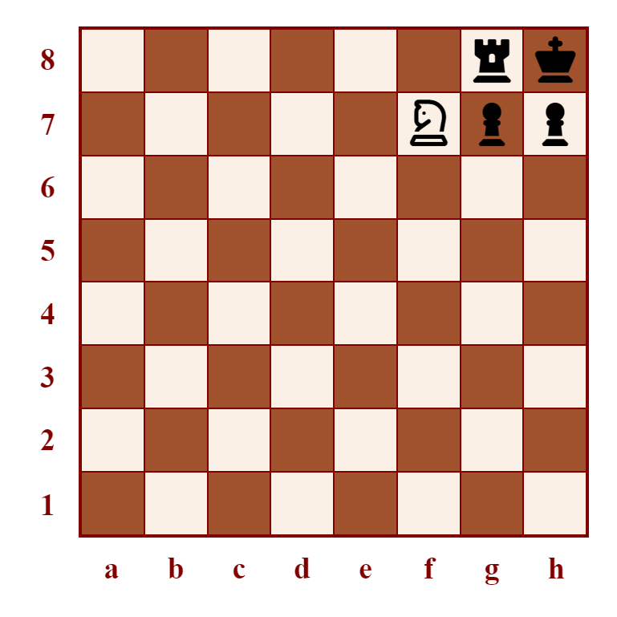
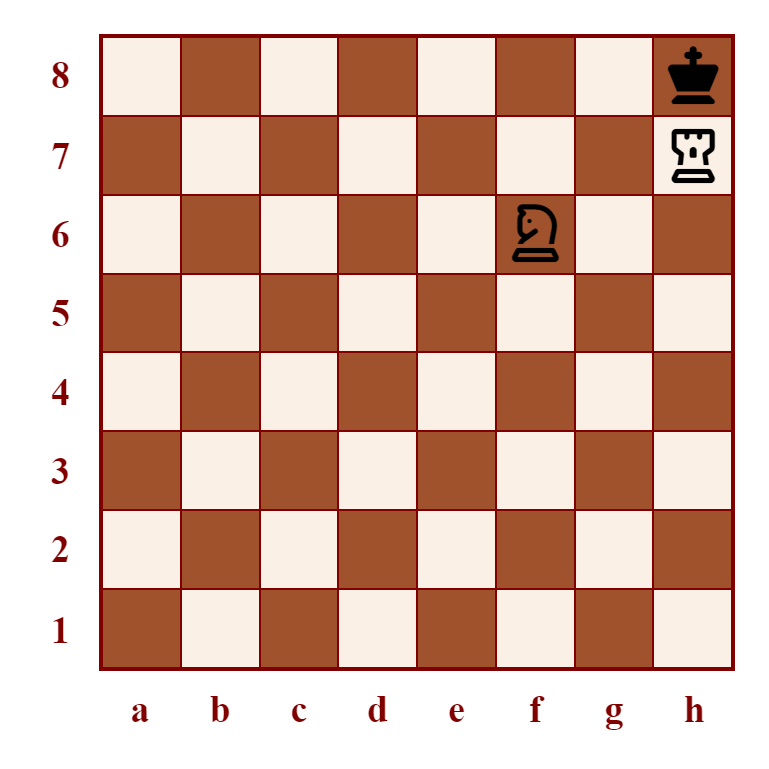

Checkmate Patterns
In the endgame, time and effort spent finding a way to deliver checkmate can often be reduced by familiarity with checkmate patterns. You don't need to reinvent common positions. In many games, familiar positions from your mental toolkit will do the job just fine.
Right Triangle Mate
Delivering checkmate with two major pieces (rooks and queen) is generally straightforward. However, by the end of the game, you can often find yourself with only one major piece remaining. Fortunately, the assistance of an active king can make up for that.
In the right triangle mate, white's king (white in this example) shields the three squares in front of black's king, preventing it from leaving the edge of the board. The checkmate is then delivered by the rook.
Smothered Mate
Given the right circumstances, even a solo knight can deliver checkmate. In this example of the smothered mate, black's king is in check from a knight and has no available moves, because they are trapped in the corner by their own pieces.
Use of this checkmate requires the opposing king to be in the corner square and a rook or equivalent piece to be immediately next to them. This can sometimes be orchestrated using piece sacrifices. Care must be taken to ensure that your knight is ready to deliver the smothered mate, so that the loss of material is not wasted.
Arabian Mate
The Arabian mate is an elegant checkmate pattern employing a rook and a supporting knight. The enemy king is manoeuvred into a corner. The knight prevents the king from moving horizontally or vertically. A rook on the 7th rank or its equivalent prevents the king from moving diagonally. Note that in a real game, the opponent must have other legally mobile material remaining on the board, else this would result in a stalemate.
Then, the rook is slid across to deliver checkmate from a square directly adjacent to the king. The rook is protected by the knight.